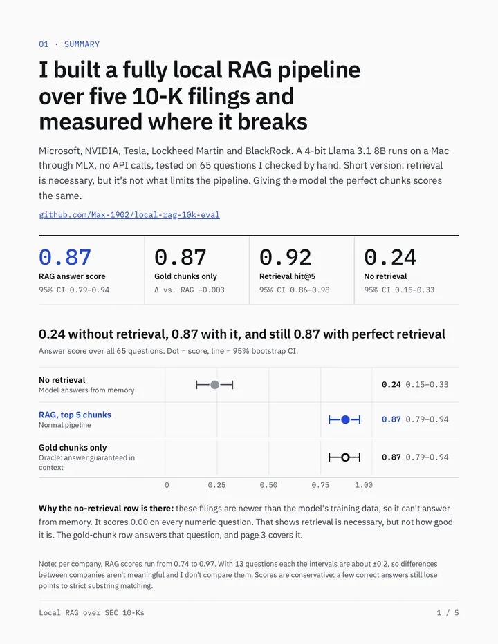
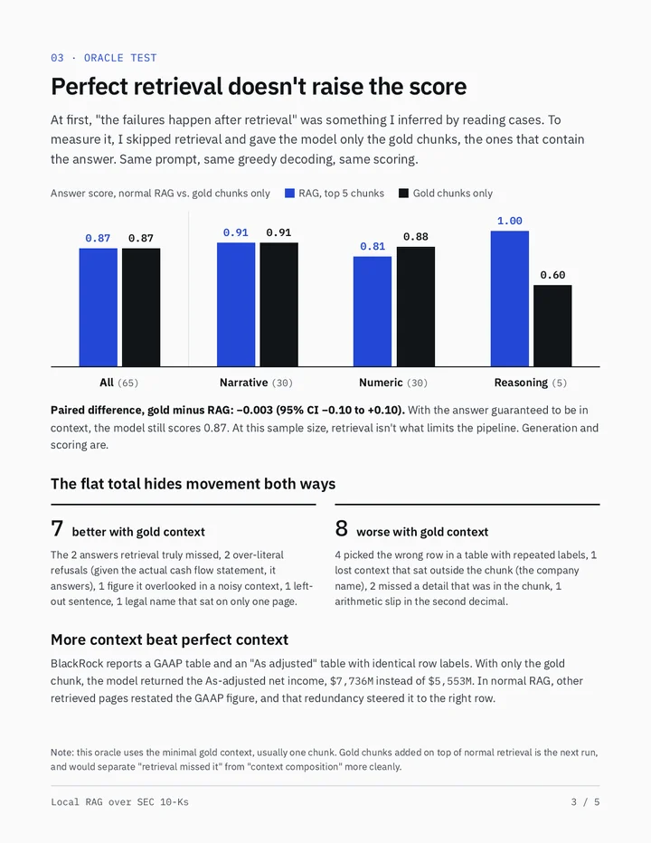
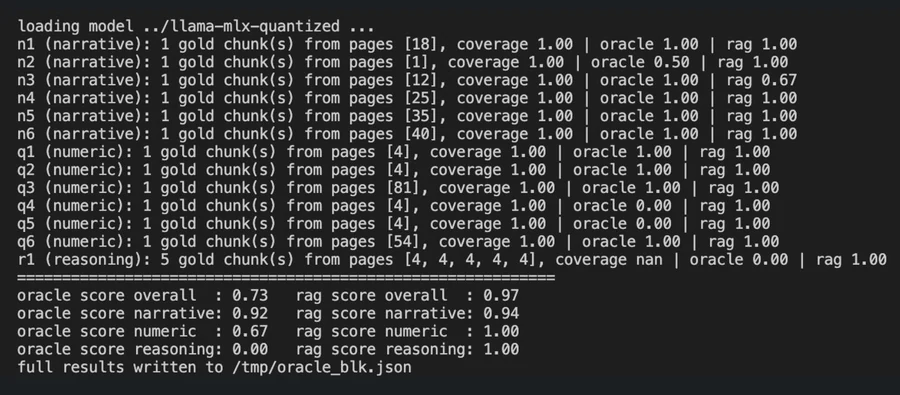

01
Local RAG & Evaluation Pipeline
A fully local RAG pipeline over FY2025–26 10-K filings of 5 companies (Microsoft, NVIDIA, Tesla, Lockheed Martin, BlackRock), using hybrid dense + BM25 retrieval with no external API calls. Oracle tests showed generation, not retrieval, was the bottleneck.
- 0.87
- Answer score on 65 hand-verified questions, vs. 0.24 without retrieval (95% bootstrap CIs)
- 0.92
- Retrieval hit@5


